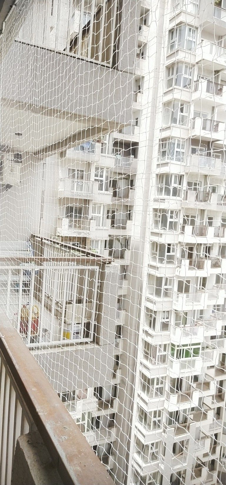

Ensuring safety in open spaces with duct area safety nets in Bengaluru is essential for preventing accidental falls and improving protection in residential, commercial, and industrial buildings. Aaradhya Safety Nets provides professional installation of strong and durable duct safety nets designed to secure open shafts, service ducts, and high-risk areas. Our solutions are made using high-tensile, weather-resistant materials that ensure long-term strength, stability, and reliable performance. Every installation is carefully executed with precise fitting and secure anchoring to maintain maximum safety for workers and building occupants without affecting ventilation or structural access.
Experience in safety installations
Successful projects completed
Quality materials used
Customer support available
Ensuring safety in open vertical spaces with duct area safety nets in Bengaluru is important for preventing accidental falls in residential, commercial, and industrial buildings. Aaradhya Safety Nets provides professional installation services for duct protection nets designed to secure open shafts, service ducts, and high-risk construction areas. We use strong, high-tensile, and weather-resistant materials that offer long-term durability and reliable performance under demanding conditions. Each installation is done with proper anchoring and precise fitting to ensure maximum safety for workers and building maintenance teams. Our expert team delivers fast, efficient, and professional service with a focus on safety compliance, long-lasting protection, and customer satisfaction across Bengaluru.
At Aaradhya Safety Nets, we proudly provide duct area safety nets in various parts of Bengaluru along with complete safety net solutions across all areas of the city. Whether you need pigeon safety nets, children safety nets, or invisible grills, our team is ready to reach your location and complete the work on time. We are committed to delivering affordable, strong, and neatly installed safety nets wherever you are in Banashankari.

We provide duct area safety nets in Bengaluru across all major locations with fast service and affordable pricing.

Ensuring safety in open and high-risk areas with duct area safety nets in Banashankari is important for preventing accidental falls and protecting workers in commercial and industrial buildings. Aaradhya Safety Nets provides strong and durable duct protection net installations using high-tensile, weather-resistant materials designed for long-lasting performance and reliability. Our expert team ensures precise fitting, secure installation, and neat finishing for maximum safety across all types of structures. We also offer fast and professional service for balcony safety nets in Banashankari with quality materials that protect children, pets, and residents. All installations are done without affecting ventilation or visibility, ensuring safe and comfortable spaces.
Join thousands of happy customers across Bengaluru
"Excellent service of balcony nets in Bengaluru. The team was professional, and the quality of the nets is outstanding."
"Professional safety net installation in Bengaluru with quick service,excellent support.Highly recommended for balcony and home safety."
"Affordable safety nets in Bengaluru with strong materials and neat installation. Great service for balcony, children, and home safety needs."
"Reliable safety net services in Bengaluru with quick installation and strong quality. Perfect solution for balcony, pets, and family protection."
+91 9502843972
Chat with us
aaradhyasafetynets123@gmail.com